1 Introduction
MobioKit is an HTML mobile template that will give you the perfect starting point in creating the layout design of your mobile website, mobile web app and mobile native app. The creative design and the amazing features will be perfect in making your mobile project unique. This mobile UI Kit includes all the necessary designs to create a mobile shop, a mobile social app, a mobile fitness app, a business related mobile app, and with a bit of imagination from your side on any mobile project.
1.A Package files content.
The main archive you will download will contain the following folder structure:
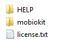
The main demos of the template are found inside the "mobiokit" folder. Once you open it, you will see the "demos" folder. Inside the "demos" folder you will see all the main demos of this template. To test the demos just open the main index.html file from each folder.
! IMPORTANT - please test the demo files on a web server
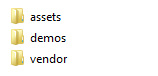
1.BHTML/CSS templates, definition and usage.
A HTML/CSS Template is a pre-designed layout that will help you build a final website. HTML ( HyperText Markup Language) is the basic coding to create web pages. CSS stands for Cascading Style Sheets and it's used to define and style the HTML elements.
To install a HTML/CSS template requires just to copy the template files on your webserver. This can be done using your hosting provider custom interface or a FTP (File Transfer Protocol) software. Our recommandation is FileZilla.
A regular HTML/CSS template does NOT include a CMS (Content Management System) to edit/add content of the pages. All content is edited using a HTML editor. HTML editors can be found as free and paid editors. Some modern HTML editors have included a DESIGN view mode of the code, making it easier for templates to be edited. Regular ones will let you edit the content only from the code mode, meaning you will need to have a basic HTML coding knowledge.
2 Editing the template
EDITING THIS TEMPLATE REQUIRES BASIC HTML/CSS AND JAVASCRIPT KNOWLEDGE. IF YOU DON'T HAVE A BASIC KNOWLEDGE OF THIS WE RECOMMEND HIRE A WEBDESIGNER OR LOOK FOR A FREELANCER ON ENVATO STUDIO.
EDITING THIS MOBILE TEMPLATE DO NOT REQUIRE A SERVER. YOU CAN EDIT IT USING A LOCAL HTML EDITOR SOFTWARE. ONLY TESTING IT, WILL REQUIRE TO BE UPLOADED TO A SERVER.
To edit this HTML template you will need a HTML editor. Even Notepad will do the job, but a dedicated HTML editor will work better in arranging the code structure. HTML editors are softwares that allow code editing. Some HTML editors have included a DESIGN mode, which will allow you to see the interface of the page you are editing. Editors can be found FREE or PREMIUM on the WEB.
TESTING THIS TEMPLATE MAY REQUIRE TO UPLOAD THE FILES TO A WEB SERVER. THE NEW FEATURES OF THIS TEMPLATE ARE MADE ONLY FOR THE LATEST MOBILE PHONES
2.AGeneral HTML/ CSS structure
The main HTML structure is composed from:
- the left panel
- the main content
- the right panel
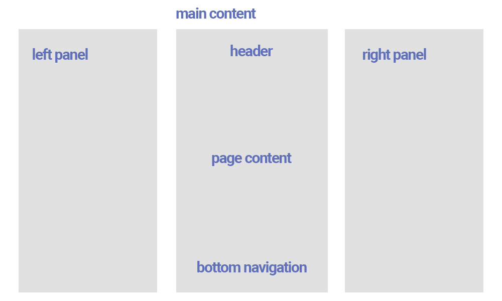
Most of the pages will start with the following HTML code:
<!-- Overlay panel -->
<div class="body-overlay"></div>
<!-- Left panel -->
<div id="panel-left"></div>
<!-- Right panel -->
<div id="panel-right"></div>
The body overlay div will be used to show a black transparent overlay when the rigth or left panel is open.
The main content will start with the DIV "<div class="page page--main" data-page="main">". Each page has an unique ID called with "data-page="main". This ID will be used in jQuery code to add some extra functionality to this page only.
The HTML structure continues with the HEADER:
<header class="header header--page header--fixed">
<div class="header__inner">
<div class="header__icon header__icon--menu open-panel" data-panel="left"><span></span><span></span><span></span><span></span><span></span><span></span></a></div>
<div class="header__logo header__logo--text"><a href="#">Mobio<strong>Kit</strong></a></div>
<div class="header__icon open-panel" data-panel="right"><img src="../../assets/images/icons/white/search.svg" alt="" title=""/></div>
</div>
</header>
The header can contain, 2 icons on the left and right side and a centered logo, or just 2 of this elements:
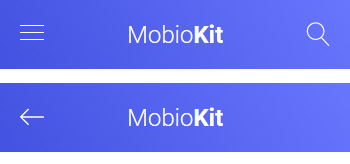
The CSS structure
The main CSS structure is created using SASS . All the scss files are inside the "scss" folder. And using a custom tool like node/gulp we have exported all this files in one general style.css found in each demo main folder
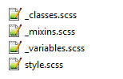
At the beginning of each style.css there is a Table of Content, so you know exactly from where each section can be customized
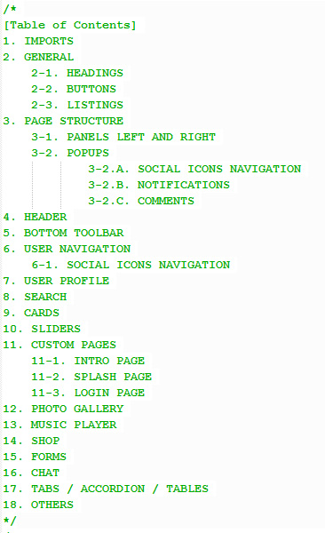
2.BLeft and right panels
The left panel HTML is loaded into the DIV "<div id="panel-left"></div>" with Ajax, so it can be edited on all pages from the same file. See jquery.custom.js file where the panel is loaded:
// LOAD PANEL LEFT
$( "#panel-left" ).load( "panel-left.html", function() {
var swipersubnav = new Swiper ('.panel__navigation', {
direction: 'horizontal',
effect: 'slide',
slidesPerView: 1,
slidesPerGroup: 1
});
swipersubnav.on('slideChangeTransitionEnd', function () {
$(".panel").animate({ scrollTop: 0 }, "slow");
});
$(".opensubnav").on('click', function(e) {
swipersubnav.slideNext();
});
$(".backtonav").on('click', function(e) {
swipersubnav.slidePrev();
});
});
Inside the left panel is the main user info and the main navigation
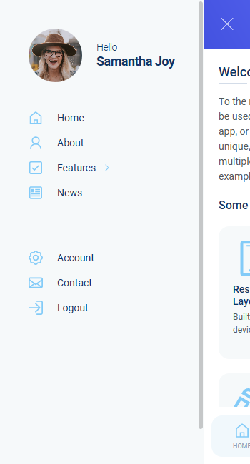
<nav class="main-nav">
<ul>
<li><a href="index.html"><img src="../../assets/images/icons/blue/home.svg" alt="" title="" /><span>Home</span></a></li>
<li><a href="main.html"><img src="../../assets/images/icons/blue/user.svg" alt="" title="" /><span>About</span></a></li>
<li class="subnav opensubnav"><img src="../../assets/images/icons/blue/checked.svg" alt="" title="" /><span>Features</span><i><img src="../../assets/images/icons/blue/arrow-right.svg" alt="" title="" /></i></li>
<li><a href="blog.html"><img src="../../assets/images/icons/blue/news.svg" alt="" title="" /><span>News</span></a></li>
<li class="divider"></li>
<li><a href="user-profile.html"><img src="../../assets/images/icons/blue/settings.svg" alt="" title="" /><span>Account</span></a></li>
<li><a href="contact.html"><img src="../../assets/images/icons/blue/contact.svg" alt="" title="" /><span>Contact</span></a></li>
<li><a href="splash.html"><img src="../../assets/images/icons/blue/logout.svg" alt="" title="" /><span>Logout</span></a></li>
</ul>
</nav>
The right panel is different on some page, it can be a search layout, or a shopping cart layout.
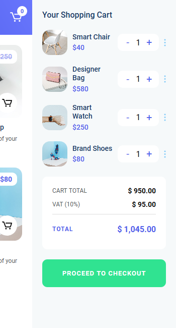
2.DCustom secondary pages
There are included more secondary pages in the demos. Like shop, photos, videos, music, forms, sliders, cards....etc
All the secondary pages have a custom HTML structure strating with the DIV <div class="page__content page__content--with-header page__content--with-bottom-nav">. A secondary page can have or not a header, or can have or not a bottom navigation are. Use the classes "page__content--with-header page__content--with-bottom-nav" to modify the content height depending on if it has a header and bottom navigation or not.
Here are some examples of secondary pages structures:
1. cards.html - contains some example of cards blocks which can be used to create custom blocks structures in pages
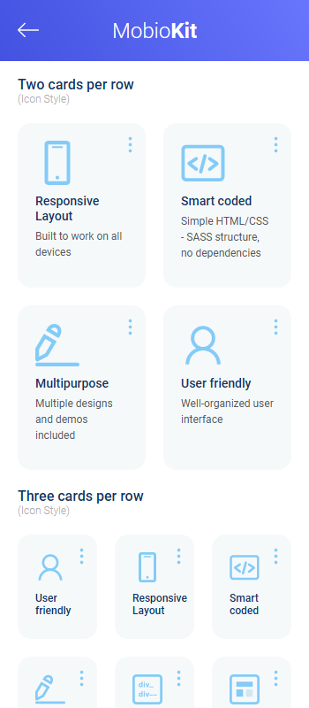
2. sliders.html - contains some example of different sliders which can be used to create custom sections in pages
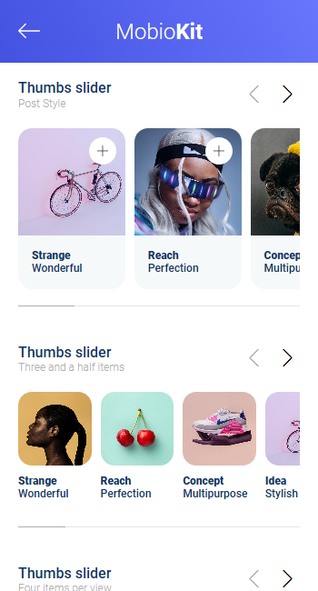
3. shop.html - contains the shop layout for a demo mobile e-commerce app
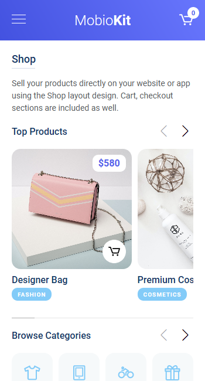
4. photos.html - contains an example of a photo gallery page
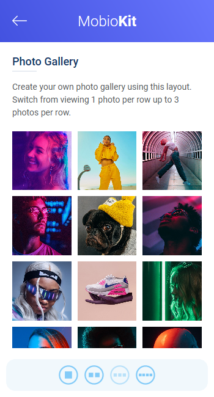
2.EPopups and Alerts
Popups are added dinamically added the bottom of any page HTML code.
For example the social popup "<div id="popup-social"></div>"
To launch the social popup we use the link code like:
<a href="#" data-popup="social" class="open-popup"><img src="../../assets/images/icons/blue/more.svg" alt="" title=""/></a>
Use the data value and class like "data-popup="social" class="open-popup"" to launch any popup based on her ID name:
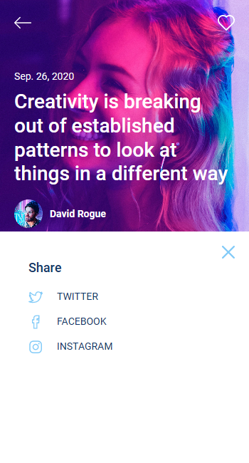
2.FContact Form
The template includes a functional contact form on contact.html page
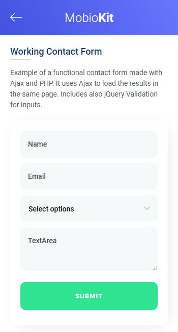
The code uses email.js and send.php files to make the form functional.
To add the email adrress you want to receive the messages edit contact.html code and see the line:
<input class="" type="hidden" name="to" value="youremail@website.com" />
2.GJavascript / jQuery files
The Javascript / jQuery files are located in 2 places:
1. In the "vendor" folder, where the general files used for all demos are. Here you can easily do the updates for this files
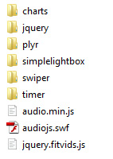
2. In each theme demo "js" folder, where is the custom JS files used for each demo individually.
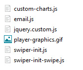
For example the jquery.custom.js file included all the main code for one demo, and use the ID of the pages to load the code especially for that page only .See for example a code that is used for "intro" page only:
if (pageid == 'intro') {
var swiperslider = new Swiper ('.slider-intro', {
direction: 'horizontal',
effect: 'slide',
parallax: true,
pagination: {
el: '.swiper-pagination'
},
navigation: {
nextEl: '.swiper-button-next',
prevEl: '.swiper-button-prev',
},
autoplay: {
delay: 2000,
}
});
}
3 Sources and Credits
- jQuery - from https://jquery.com/
- Swiper - https://swiperjs.com/
- Charts - http://chartjs.org/
- Plyr player - https://plyr.io/
- Simple lightbox - https://simplelightbox.com/
- Esytimer - https://albert-gonzalez.github.io/easytimer.js/
- Free icons - https://freeicons.io/
- Free icons - https://linearicons.com/free
- Demo photos - https://unsplash.com/
- Demo photos - https://www.freepik.com/
- Some demos includes graphics Designed by Freepik - https://www.freepik.com/